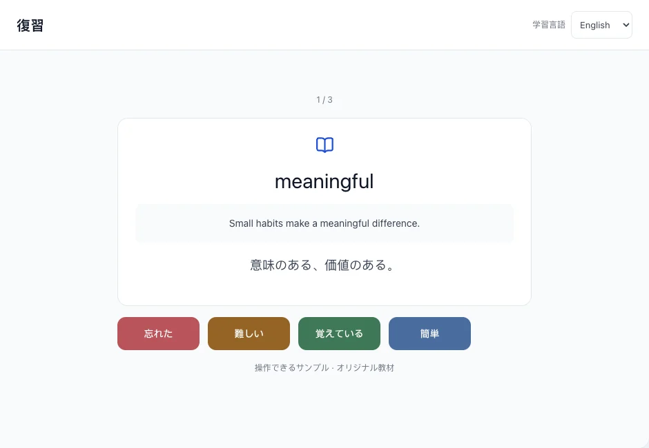
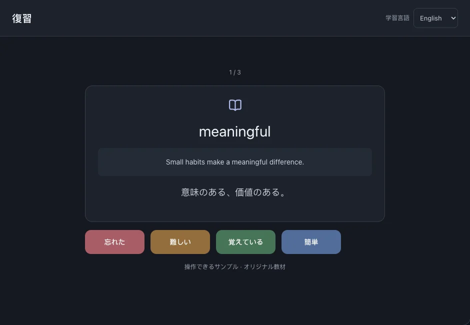

復習
元の文で単語やフレーズを思い出し、記憶を評価します。回答から次の復習が予定されます。
このページの目次
復習する
- 「復習」でカードを読み、答えを見る前に意味を思い出します。
- 答えを表示して、自分の記憶と比べます。
- 評価して次のカードに進みます。評価は復習記録に保存されます。



評価の選び方
忘れた：思い出せない。難しい：苦労して思い出した。覚えている：正しく思い出した。簡単：すぐ確信を持って思い出した。
次回の時刻はカードの履歴と評価によって変わります。固定間隔やプッシュ通知ではありません。
既知の頻出語を確認する
頻出語の初期設定を使うと、既知語の確認も復習に含まれます。現在は英語と中国語に対応しています。
関連する操作頻出語の初期設定